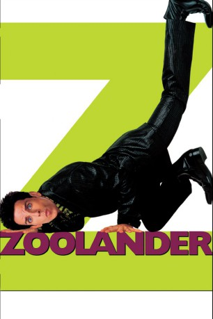

#3305 Zoolander
 
 IMDB-Wertung: 6.6 / 10
IMDB-Wertung: 6.6 / 10  Metascore: 61
Metascore: 61 
Derek Zoolander ist ein oberflächliches, von sich selbst überzeugtes Model, der seine Pole Position im Model-Business verloren glaubt. Er wird von einem Agenten der CIA rekrutiert und einer Gehirnwäsche unterzogen, und soll den Präsidenten von Malaysia ermorden, weil der Kinderarbeit in seinem Land verbieten will.
Jahr: 2001
Dauer: 89 Minuten
FSK: 12
Land: Deutschland Studio: UIPTonspuren: DD5.1 - ,
Untertitel: Deutsch,
Auflösung: 720p (1280x544) Größe: 4485 MB
Genre: Komödie
Regisseur:  Ben Stiller
Ben Stiller
Drehbuch: Drake Sather, Ben Stiller, Drake Sather, Ben Stiller, Drake Sather
Soundtrack: David Arnold
Darsteller:
Datei: X:\2-Dilogie(N-Z)\Zoolander\Zoolander (2001, FSK12, 1280x544).mkv seit 07.03.2016
Festplatte: HD Collection-2(A-Z)-3(A-M)
 Alle Filme aus Gruppe '2-Dilogie(N-Z)\Zoolander'
Alle Filme aus Gruppe '2-Dilogie(N-Z)\Zoolander'